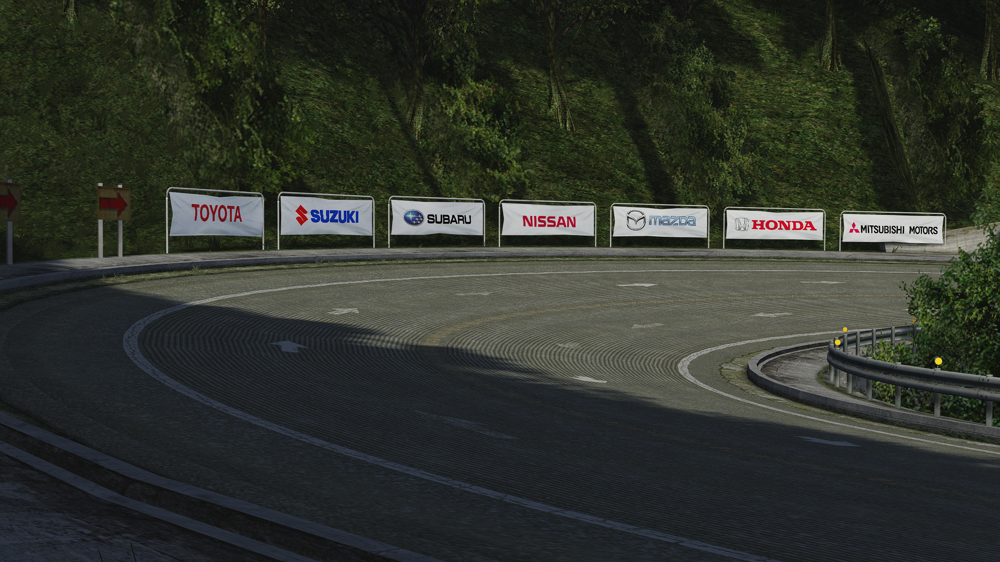
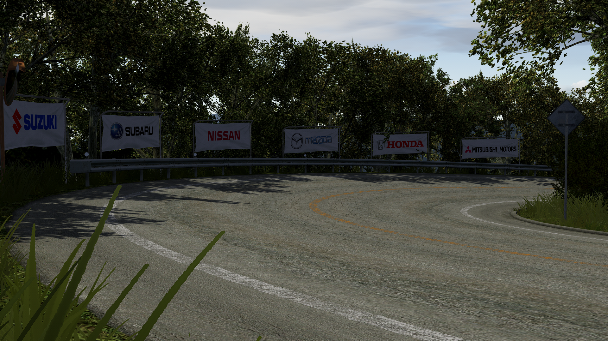
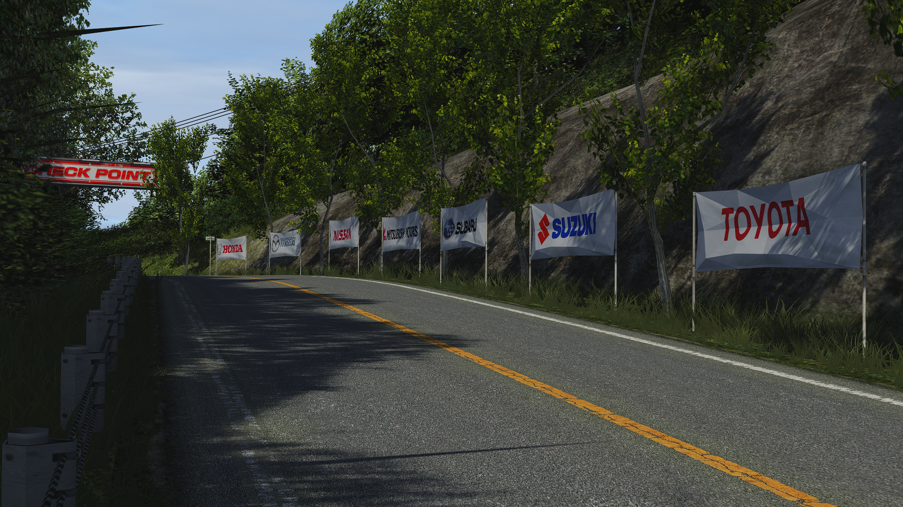
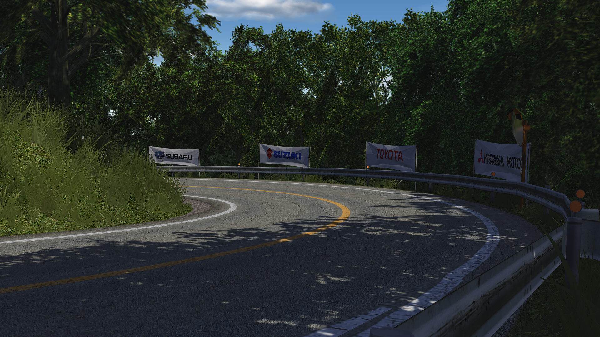
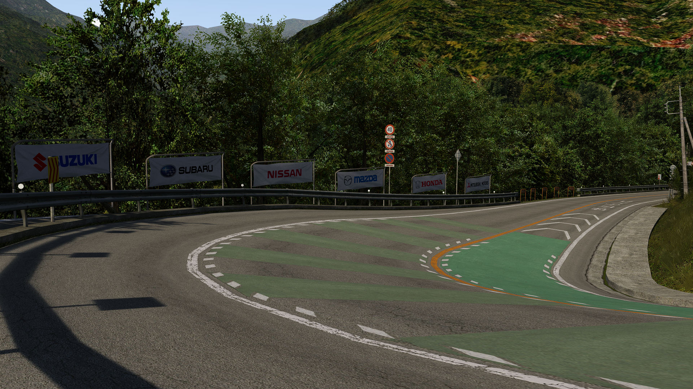
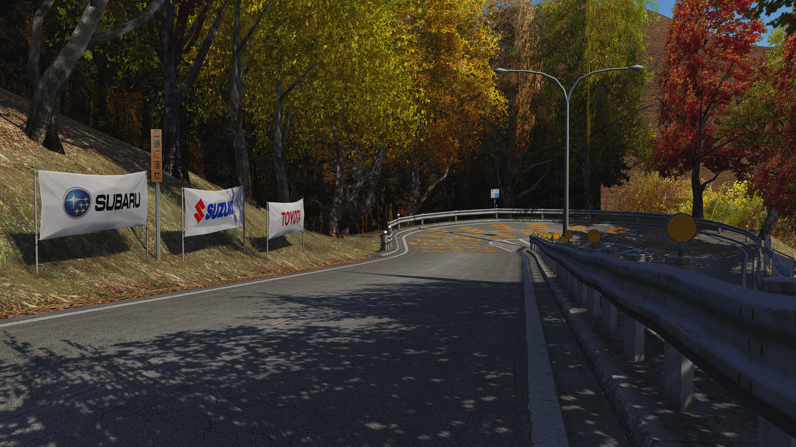
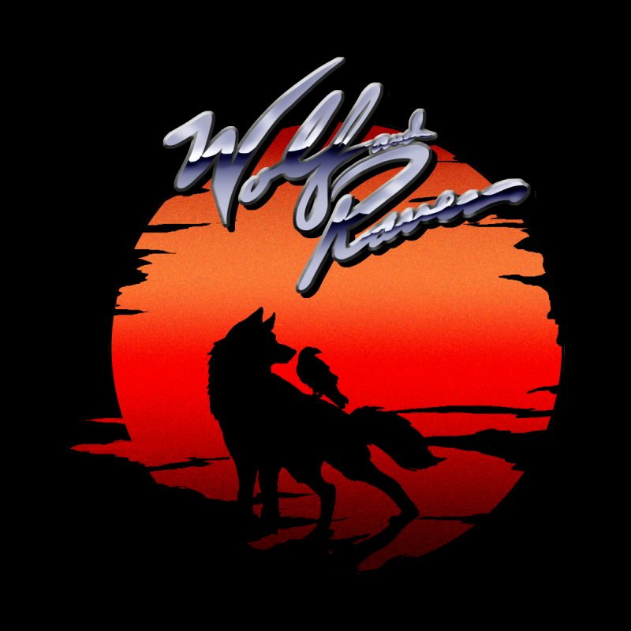

Press Enter to Start
Press Enter to Start

First course in the drift progression.

Steeper rhythm, tighter lines, harder exits.

Outbound run with fast transitions and flow.

The classic downhill benchmark of the set.

Final mockup level in the current five-course list.

Sixth course in the drift progression.
Each driver's best finished run, Steam-verified only. Highest score ranks first; a tied score goes to the faster time.
| Rank | Driver | Car | Score | Time | Date |
|---|
Initial DriftRun and Cruisin AC use music by Wolf and Raven.

Featured albums: Tribute to OutRun and Tokyo Turbo
Visit wolfandravenmusic.com